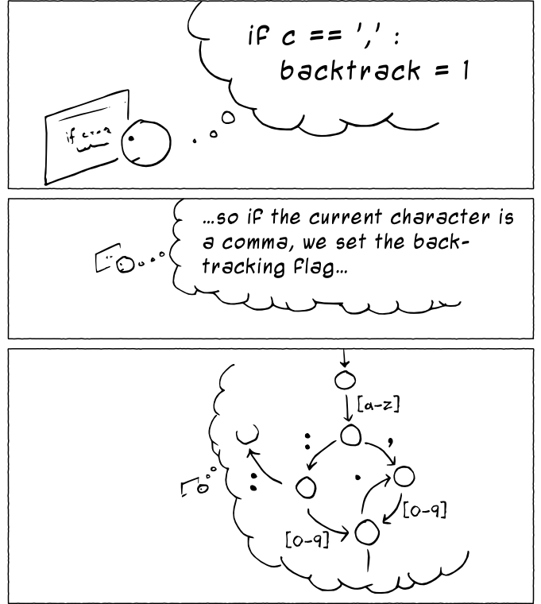
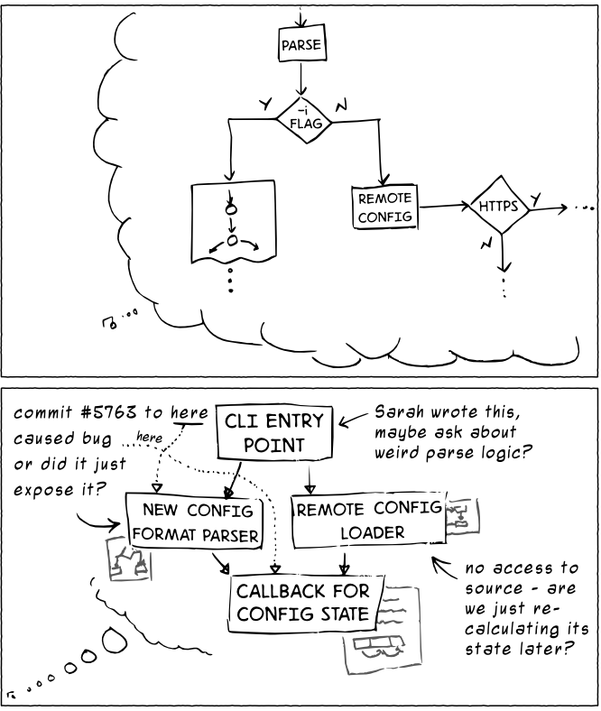
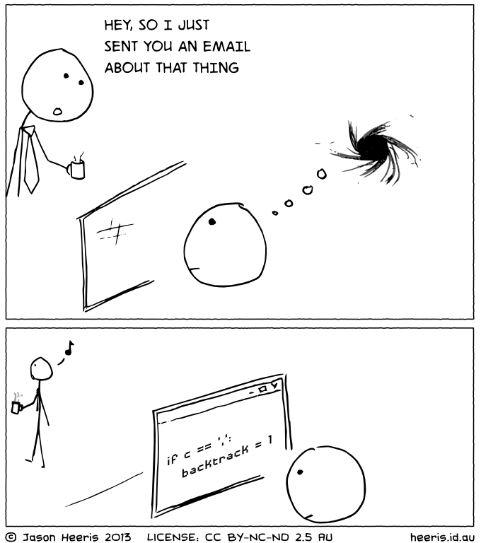

Context Switching Is Bad...
In a multitasking context, it refers to the process of storing the system state for one task, so that task can be paused and another task resumed.
A context switch can also occur as the result of an interrupt, such as when a task needs to access disk storage, freeing up CPU time for other tasks
In human terms, someone walking up to your desk, stopping to look at a notification or other distractions are forms of context switching
Context Switching Is Super Bad...



Our brains aren't made to multi-task
You can get better at it, but it still causes massive fatigue
It takes an average of 23 minutes to return to work after being interupted
Tell a personal experience
Even with good intentions and motivation, attempting to tackle more than you can handle
almost always goes sideways
Meantion some approaches to get out of the situation
Share stories where things might not have worked out